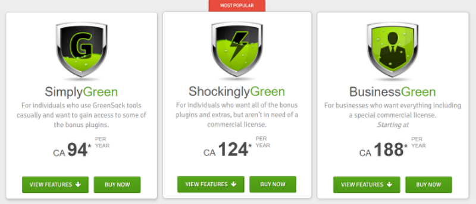

GreenSock
What is GreenSock? (GSAP)
GSAP (Greensock Animation Platform) is a standard Javascript library of JS files used for animating elements and SVGS
Has been around for over 10 years and is very popular
How does it work ?
Install one of four different Javascript libraries
Write short snippets of code that define the animation
Set the timing of the animation
\
GSAP and SVGs
Powerful tool for animating SVGs
SVG animation is often complicated and prone to issues, which Greensock remedies
Features include animation of SVG strokes, progressive revealing of strokes, morph SVGs, drag and drop SVG elements, and more.
\
THE GOOD
Compatible with all major browsers
Highly performant
Removes common animation bugs
only a basic knowledge of Javascript and you can start
Well supported and has been around for awhile
\
THE BAD
Requires strong knowledge of Javascript to create advanced animations
Large libraries
Have to pay to use the good plug-ins
